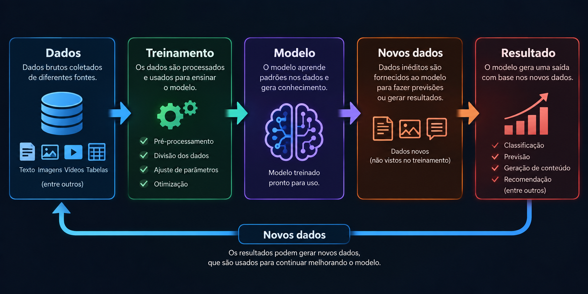
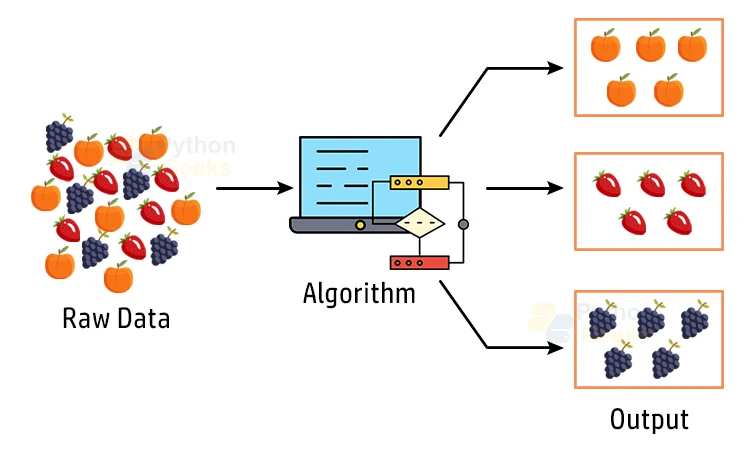
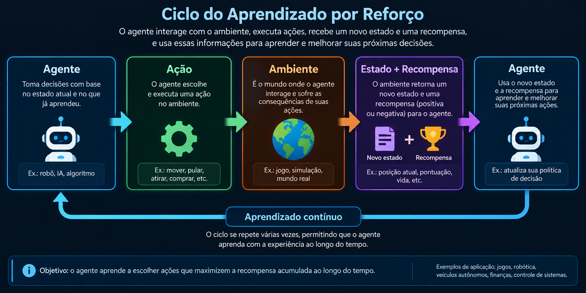

O que é Machine Learning?
Machine Learning, ou Aprendizado de Máquina, é uma área da Inteligência Artificial dedicada ao
desenvolvimento de sistemas capazes de identificar padrões e aprender a partir de dados. Em vez de um
programador precisar definir manualmente todas as regras que um sistema deve seguir, algoritmos de
Machine Learning podem utilizar exemplos para construir modelos capazes de realizar determinadas
tarefas.
Em um programa tradicional, normalmente são desenvolvidas regras que determinam como o software deve
reagir às informações recebidas. Em Machine Learning, o funcionamento pode ser diferente. O
sistema
recebe dados durante uma etapa chamada treinamento e utiliza essas informações para ajustar seus
parâmetros internos. Esses parâmetros representam parte do conhecimento adquirido pelo modelo e são
utilizados posteriormente para produzir resultados quando novos dados são apresentados.
Imagine, por exemplo, um sistema criado para identificar diferentes animais em fotografias. Em vez de
tentar escrever manualmente todas as características possíveis de cada animal, podemos utilizar diversas
imagens como dados de treinamento. O modelo analisa esses exemplos e procura padrões que sejam úteis
para diferenciar as imagens. Depois do treinamento, uma fotografia que nunca foi utilizada anteriormente
pode ser apresentada ao modelo para que ele tente identificar o animal.
A qualidade e a quantidade dos dados podem ter grande influência no desempenho de um modelo. Dados
incompletos, incorretos ou pouco representativos podem fazer com que o sistema tenha dificuldade para
produzir bons resultados. Por isso, o desenvolvimento de uma aplicação de Machine Learning também
envolve etapas de coleta, organização, preparação e avaliação dos dados.
Atualmente, técnicas de Machine Learning estão presentes em diversas tecnologias. Sistemas de
recomendação podem analisar preferências para sugerir filmes, músicas ou produtos. Serviços de e-mail
podem identificar mensagens suspeitas ou spam. Instituições financeiras podem utilizar modelos para
auxiliar na identificação de transações incomuns. Outras aplicações incluem reconhecimento de imagens,
previsão de demanda, processamento de textos e análise de grandes conjuntos de informações.
Existem diferentes maneiras de realizar o aprendizado de um modelo. A escolha depende principalmente do
problema que precisa ser resolvido e dos dados disponíveis. Entre as principais categorias estão o
aprendizado supervisionado, o aprendizado não supervisionado e o aprendizado por reforço.

Aprendizado Supervisionado
O aprendizado supervisionado é uma das principais formas de treinamento utilizadas em Machine
Learning.
Nesse método, o modelo aprende utilizando exemplos que possuem uma resposta conhecida. Os dados de
treinamento contêm informações de entrada associadas aos resultados esperados, geralmente chamados de
rótulos.
Podemos imaginar um sistema desenvolvido para identificar mensagens de spam. Para treiná-lo, seria
possível utilizar uma coleção de mensagens que já foram previamente classificadas como “spam” ou “não
spam”. O algoritmo analisa as características presentes nesses exemplos e tenta encontrar padrões que
ajudem a distinguir as duas categorias.
Depois do treinamento, o modelo pode receber uma nova mensagem que não fazia parte dos exemplos
utilizados anteriormente. Utilizando os padrões aprendidos, ele calcula qual classificação parece mais
adequada para aquela mensagem.
Outro exemplo seria um sistema desenvolvido para reconhecer animais em fotografias. Durante o
treinamento, poderiam ser fornecidas diversas imagens acompanhadas de informações indicando qual animal
aparece em cada uma. Ao analisar muitos exemplos, o modelo pode aprender características úteis para
posteriormente tentar classificar novas imagens.
Existem dois tipos de problemas muito comuns dentro do aprendizado supervisionado: classificação e
regressão. Na classificação, o objetivo é determinar a qual categoria uma informação pertence.
Identificar uma mensagem como spam ou não spam e reconhecer diferentes objetos em uma fotografia são
exemplos de classificação.
Na regressão, o objetivo normalmente é estimar um valor numérico. Um modelo poderia analisar informações
sobre imóveis, como tamanho, localização, quantidade de quartos e características da propriedade, para
tentar estimar seu preço.
O aprendizado supervisionado é utilizado em diversas aplicações porque muitos problemas podem ser
representados utilizando exemplos de entrada e resultados conhecidos. Entretanto, a obtenção de dados
corretamente classificados pode exigir bastante trabalho, especialmente quando milhares ou milhões de
exemplos precisam ser preparados para o treinamento.
- Classificação de imagens
- Detecção de spam
- Previsão de preços
- Análise de documentos
- Previsão de demanda
Aprendizado não supervisionado
O aprendizado não supervisionado trabalha com dados que não possuem necessariamente respostas ou
categorias previamente definidas. Diferentemente do aprendizado supervisionado, no qual os exemplos
utilizados durante o treinamento possuem rótulos, aqui o algoritmo busca encontrar estruturas, relações
e padrões presentes nos próprios dados.
Uma das técnicas mais conhecidas desse tipo de aprendizado é o agrupamento, também chamado de
clustering. O objetivo é identificar elementos que apresentam características semelhantes e
organizá-los
em grupos. Esses grupos não precisam ser definidos manualmente antes da análise.
Imagine uma empresa que possui informações sobre milhares de clientes. Esses dados podem incluir
frequência de compras, valores gastos, tipos de produtos adquiridos e outras características. Em vez de
determinar previamente quais tipos de consumidores existem, um algoritmo de agrupamento pode analisar as
informações e encontrar grupos de clientes que apresentam comportamentos semelhantes.
Depois dessa análise, a empresa poderia estudar as características encontradas em cada grupo para
compreender melhor diferentes padrões de comportamento. O algoritmo não necessariamente sabe o
significado de cada grupo; ele identifica relações matemáticas existentes entre os dados. A
interpretação dos resultados normalmente depende das pessoas responsáveis pela análise.
Outra aplicação do aprendizado não supervisionado está relacionada à redução de dimensionalidade.
Grandes conjuntos de dados podem possuir centenas ou milhares de características diferentes. Algumas
técnicas permitem representar essas informações de maneira mais compacta, preservando características
consideradas importantes.
O aprendizado não supervisionado pode ser especialmente útil durante a exploração de dados quando ainda
não sabemos exatamente quais padrões existem. Em vez de procurar apenas uma resposta previamente
determinada, os algoritmos podem ajudar a revelar estruturas que não seriam facilmente percebidas
através de uma análise manual.
Por outro lado, avaliar os resultados pode ser mais difícil do que em problemas supervisionados. Como
não existe necessariamente uma resposta correta previamente definida, é importante analisar se os
padrões encontrados são realmente úteis para o objetivo da aplicação.

Aprendizado por reforço
O aprendizado por reforço é uma abordagem de Machine Learning na qual um agente aprende através da
interação com um ambiente. Em vez de receber diretamente a resposta correta para cada situação, o agente
realiza ações e observa as consequências dessas decisões.
Durante esse processo, determinadas ações podem gerar recompensas, enquanto outras podem resultar em
consequências menos favoráveis. Com o passar das interações, o agente utiliza essas experiências para
aprender uma estratégia que permita obter melhores resultados ao longo do tempo.
Podemos imaginar um personagem controlado por inteligência artificial dentro de um jogo. Inicialmente, o
agente pode não saber quais ações são mais adequadas. Ele pode explorar diferentes possibilidades e
observar os resultados. Alcançar determinado objetivo pode gerar uma recompensa, enquanto uma ação que
prejudica seu progresso pode produzir uma recompensa menor ou uma penalidade.
Depois de muitas interações, o sistema pode aprender quais ações apresentam maior possibilidade de
produzir bons resultados em diferentes situações. Esse processo não significa simplesmente memorizar
cada movimento individualmente. O objetivo é desenvolver uma política, ou seja, uma estratégia que
determine quais ações devem ser consideradas dependendo do estado atual do ambiente.
Um dos desafios do aprendizado por reforço é equilibrar exploração e aproveitamento. O agente precisa
utilizar estratégias que já apresentaram bons resultados, mas também pode precisar experimentar novas
ações para descobrir alternativas melhores. Se apenas repetir aquilo que já conhece, talvez nunca
encontre uma estratégia superior. Por outro lado, explorar constantemente pode impedir que aproveite
aquilo que já aprendeu.
O aprendizado por reforço é estudado em áreas como jogos, robótica, controle de sistemas e
otimização.
Ele é especialmente interessante para problemas nos quais uma sequência de decisões influencia o
resultado final.
Dessa forma, enquanto no aprendizado supervisionado existem exemplos com respostas conhecidas e no não
supervisionado o objetivo pode ser encontrar padrões sem rótulos, no aprendizado por reforço o
conhecimento é adquirido principalmente através das interações entre o agente e o ambiente.

Comparação dos tipos de Machine Learning
| Tipo | Como aprende | Dados | Objetivo | Exemplo |
|---|---|---|---|---|
| Supervisionado | Aprende com exemplos conhecidos | Dados rotulados | Classificar ou prever | Detectar spam |
| Não supervisionado | Encontra padrões | Dados sem rótulos | Descobrir estruturas | Agrupar clientes |
| Por reforço | Interage com um ambiente | Experiências e recompensas | Aprender uma estratégia | Agente em um jogo |
Como funciona o treinamento de um modelo?
O treinamento é uma das etapas mais importantes no desenvolvimento de um sistema de Machine
Learning.
Antes de iniciar esse processo, normalmente é necessário obter os dados que serão utilizados pelo
modelo. Dependendo da aplicação, essas informações podem ser textos, imagens, números, registros de
sensores ou diversos outros tipos de dados.
Depois da coleta, os dados geralmente passam por uma etapa de preparação. Informações incorretas,
duplicadas ou inadequadas podem precisar ser corrigidas ou removidas. Dependendo do problema, também
podem ser realizadas transformações para deixar os dados em um formato adequado para o algoritmo
escolhido.
Em seguida, parte dos dados pode ser utilizada para o treinamento do modelo. Durante esse processo, o
algoritmo ajusta seus parâmetros buscando reduzir seus erros ou melhorar seu desempenho de acordo com
determinado objetivo.
Entretanto, avaliar um modelo utilizando apenas os mesmos dados usados durante o treinamento pode
produzir uma impressão incorreta sobre seu desempenho. Por isso, normalmente são utilizados dados
separados para avaliar como o modelo se comporta diante de exemplos que não foram utilizados diretamente
para ajustar seus parâmetros.
Após a avaliação, o modelo pode precisar passar por novos ajustes. Quando apresenta resultados
considerados adequados para a aplicação, ele pode ser integrado a um sistema para realizar previsões ou
outras tarefas utilizando novos dados.
- Coleta
- Preparação
- Treinamento
- Avaliação
- Utilização
Perguntas Frequentes
- Machine Learning é Inteligência Artificial?
- Machine Learning e Deep Learning são iguais?
- Todo modelo precisa de muitos dados?
- O que são dados de treinamento?
- Um modelo pode cometer erros?
Sim. Machine Learning é uma das áreas da Inteligência Artificial.
Não. Deep Learning é uma abordagem de Machine Learning baseada em redes neurais profundas.
Não. A quantidade necessária depende do problema, do modelo e da qualidade dos dados.
São os dados utilizados pelo modelo durante o processo de aprendizado.
Sim. Modelos de Machine Learning podem produzir previsões ou classificações incorretas.